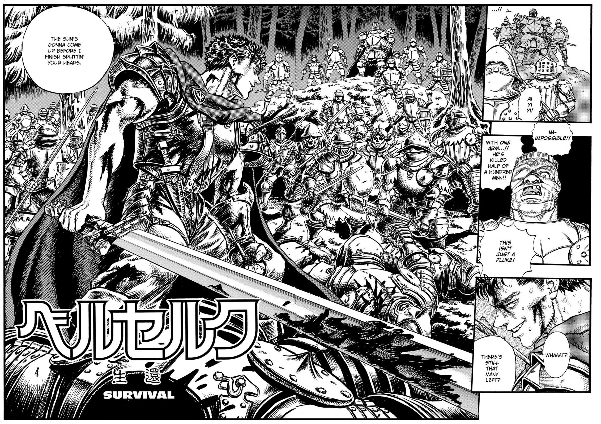

Overview
ps
Personality
Known for his air of austerity, Guts is a gruff, cynical man holding an overall bleak outlook on life. This is a consequence of enduring waves of suffering and numerous betrayals since his youth, with nearly all highlights of his life having, in time, become lows. In spite of his guarded, brooding exterior, he shows a more easygoing, compassionate side around the people he trusts, appearing markedly less unsociable and distant, though still retaining his dry candidness. Even as his inner darkness festers deep within him and its temptation becomes increasingly harder to resist, he retains his empathy and compassion, refusing to completely discard his humanity.
In his formative years, Guts is devoid of true purpose in life, killing as a child mercenary merely as a means to survive. As a blank slate, he often finds himself seeking validation from those he respects most, content so long as "one person [looks his] way". His precariousness slowly develops into individuality upon meeting Griffith, however, someone whom he eventually seeks to stand beside as an equal, rather than be looked down on by. The swordsman then embarks on a journey of self-discovery, in which he comes to acknowledge his lifelong bond with and passion for the sword. Upon realizing this, he begins devoting himself to honing his craft and fighting ever stronger adversaries – having a newfound purpose in life through this.
ey
Early Years
Cursed Miracle
Guts is born from the corpse of his lynched mother underneath a hanging tree, where he is left to die alone in a mire of blood and afterbirth. A mercenary group lead by a man named Gambino eventually happens upon the grisly site, presuming the infant to be dead. When the baby wails, however, to the surprise of the mercenaries, an acquaintance of Gambino's, Shisu, immediately takes to the child and comes to his aid. Gambino allows the woman to keep Guts for her own personal consolation, despite the circumstances of Guts' birth being considered ominous by his cohorts. Three years later, Guts' surrogate mother contracts the plague, dying as he looks on.
Under Gambino's tutelage, Guts begins honing his swordsmanship at six years of age, and joins the mercenary's band three years later, looking up to his leader as a father figure of sorts. On the night following Guts' first skirmish, however, a mercenary named Donovan ambushes and rapes him in his tent, revealing he bought the boy for a night from Gambino. In a following skirmish, the young mercenary isolates Donovan and eliminates him, refusing to believe the man's claim from the previous night.
When Gambino loses his leg in battle, his relationship with Guts immediately deteriorates. From verbal to physical abuse, Guts is subjected to various forms of degradation before Gambino eventually makes an attempt on his life. Possessed of the notion Guts is the reason for his misfortune, Gambino reveals he did indeed sell Guts out to Donovan, voicing his disgust for the boy's existence. Heavily disheartened by this revelation, Guts retaliates and kills his assailant – the closest thing to a father he has ever known. Consequently attacked by Gambino's men and branded a father killer, he flees the encampment with aggressors on his tail, eventually running into a dead end and being shot off a cliff side. From his high fall and a bout with a pack of wolves below, he falls unconscious, eventually being discovered by and enlisted as a child soldier in another mercenary band that happens upon him.
Spring Flower of Days Long Passed
As a result of being on the losing side of battle, Guts and his fellow mercenaries are captured and intended to work as laborers for their captors. On their way to the castle they were to help construct, Guts meets a man named Martino, who aids and befriends the injured young mercenary on their trek, even seemingly helping him escape. Martino instead uses Guts' escape attempt as a decoy to make his own, leaving as the guards recapture the boy, later imprisoning Guts in a frigid cell. In his cell, the young mercenary meets the forlorn spirit of a lone flower named Chitch, who nurses him back to health as he readies for a bout with his captor's son. In the process of healing Guts, however, Chitch expends all of her remaining petals and ceases to be; grateful for her aid, Guts decides to take Chitch's remains to a valley of other blooms like her after his escape. Following his eventual defeat of his captor's son and subsequent storming of the castle by his mercenary band – who had been notified by Martino of the castle's location and potential spoils – Guts fulfills his resolve to lay Chitch's remains in a valley of radiant flowers.
gac
Golden Age Arc
Meeting the Falcons
During the siege of a military garrison defended by the Band of the Falcon, Guts joins the fray alongside a mercenary band and narrowly defeats an enemy leader named Bazuso, lowering the enemy's morale and allowing for the fort's capture. In his travels, he is attacked by Falcons seeking to claim his reward and exact revenge for his earlier interference. He easily dispatches most of them until he is met by Griffith, who quickly incapacitates the swordsman and has him brought to the Falcons' encampment.
Waking several days later, Guts is given by Griffith the option to join the Falcons, though he promptly refuses, instead opting to challenge Griffith to a duel. He stipulates that the White Falcon can lay claim to him in the advent of defeating him in combat. Harboring a vested interest in Guts, Griffith agrees and the two engage in a sensational battle, with the White Falcon ultimately defeating the swordsman and enlisting him as a member of the Band of the Falcon.
zodd
Encountering Nosferatu Zodd
In three years time, Guts is promoted to Raiders Captain and, for their efforts against the Black Ram Iron Lance knights, the Falcons are formally recruited by Midland in its century-spanning campaign against Tudor. At a later point, amid seizing a Tudor stronghold, the Falcons find themselves at a standstill while making their final push into the fortress, with roughly fifty of Guts' soldiers being slaughtered by a single enemy burrowed within the inner citadel. Fed up with these results, Guts ventures into the citadel, where he meets the monstrous apostle Zodd and engages in battle with the demon. Initially taken aback by his opponent's overwhelming aura and daunted from parrying Zodd's bone-rattling strikes, Guts ultimately gambles his life on one swing, and with it, lands a gashing blow on the apostle. However, Zodd is only further excited by the injury – having after 300 years finally found a human capable of injuring him – and subsequently assumes his behemoth true form.
Petrified by Zodd's transformation and completely outclassed, Guts is thrashed around and nearly crushed by the apostle, before Griffith and Falcon reinforcements intervene. When Griffith comes to Guts' aid, Zodd blocks the two Falcons' path of escape, forcing them to execute a pincer movement on the apostle, in which both of them deal substantial damage to the beast. In retaliation, Zodd tail whips Griffith into a column, though he immediately ceases his onslaught upon sighting Griffith's Crimson Beherit. The beast leaves Guts with a prophecy, warning the swordsman of an inescapable death that shall befall him should Griffith's dream ever collapse, before flying off.
Precious Thing
"They are excellent troops. Together, we have faced death so many times. They are my valuable comrades, devoting themselves to the dream I envision... but... to me, a friend is... someone who would never depend upon another's dream... Someone who wouldn't be compelled by anyone, but would determine and pursue his own reason to live... And should anyone trample that dream, he would oppose him body and soul... even if the threat were me myself... What I think a friend is... is one who is my 'equal'."
– Griffith
During the Autumn Hunt in Wyndham after their return, the Band of the Falcon acts as the king's guard in place of General Julius' White Dragon Knights. In midst of the hunt, Griffith is shot by a stray arrow, but avoids injury due to his behelit taking the brunt of the blow. On a night sometime after, Griffith, having deduced Julius as the culprit behind the murder attempt, asks Guts to assasinate the general in retaliation. The black swordsman invades Julius' manor in the dark of night and swiftly eliminates his target. When the door to general's room opens, Guts, assuming it to be a guard or a maid, pierces through in advance, killing Julius' son, Adonis. With the guards alerted, a distraught Guts battles his way off the premises and escapes through the Wyndham sewers. Making his way to Promrose Hall, where Griffith is set to be in attendance, Guts rendezvouses first with Casca, and together, they overhear Griffith giving his interpretation of a true friend to Princess Charlotte. With the conclusion of Griffith's monologue, Guts leaves the scene, vexed by the implication that he too, ultimately, is nothing more than an asset to the realization of Griffith's dream.
hms
Hundred Man Slayer
The Band of the Falcon shortly after sets out to combat the Blue Whale Knights of Tudor. During the engagement, noticing the trouble Casca was having with an enemy commander, Guts intervenes and does battle with the spearman Adon Coborlwitz. Upon candidly defeating his opponent, the Raiders Captain notices a fainting Casca staggering off a cliff edge and breaks her fall, before he is shot off his horse, and subsequently the cliff, by a desperate Adon. The two Falcons free fall into the river current below, with Guts pulling them ashore and finding them shelter from the chill rain. Believing Casca to be feverish, he removes her drenched clothes and rewarms her with his body heat while waiting out the rain.
In the midst of their escape, the two Falcons are surrounded by a swarm of Adon's troops. Together, they mount a counter offensive, with Guts eventually killing Adon's brother, Samson. Acknowledging Casca's weakened condition, however, Guts decides to stay behind to buy time for her escape, telling his comrade to return to her metaphorical sword master Griffith. The Raiders Captain, in an arduous battle, is able to defeat all of the Tudor troops in the forest, single-handedly killing approximately one hundred soldiers. After Guts is found and carried to a Falcon encampment, he reveals to Casca his admiration for her, Griffith, and the rest of the Falcons' ambition to move forward towards realizing their collective dream. However, he also reveals he doesn't feel his place is with their "campfire of dreams", strongly alluding to his forthcoming departure from the band.
Defeated and distraught, Griffith seeks out Charlotte on the night of Guts' departure. He seduces and beds her, leaving the morning after. Consequently, outside of the palace, Griffith is arrested by Midland guards on the grounds of treason.He is taken to a torture chamber within the Tower of Rebirth, where he is whipped repeatedly by the king, who berates him for betraying his trust and defiling the royal house. Griffith worsens the matter by deducing the king's lust for his own daughter, as well as claiming his reign has been nothing more than a miserable stagnancy. Infuriated, the king orders the year-long torture of Griffith, specifically demanding the Falcon's prolonged suffering.
hms
Rescuing Griffith
The Griffith Rescue Squad is formed following Guts' return, and in three days, infiltrates Wyndham through the sewers. With the aid of Princess Charlotte, the group is able to make their way to the ancient Tower of Rebirth, where Griffith is said to be held. After a deep descent to the lowest prison cell beneath the tower, the Falcons are appalled at the sight of a crippled, flayed Griffith – a shell of his former self. Overcome with emotion, Guts hugs his fallen comrade – not realizing Griffith's feeble attempt to choke him – before mercilessly killing the tower jailer responsible for the White Falcon's ravaged state. Fighting their way through a wave of alerted Wyndham soldiers, the Griffith Rescue Squad is able to reenter the sewers, thwart a Bakiraka ambush, and escape Wyndham to a farm outside the city. En route to the Midland border, the group realizes they are being pursued by the dreaded Black Dog Knights. Though their laid traps fail to deter the Dogs, the squad eventually rejoins another Band of the Falcon unit and combats their chasers, Guts clashing with the Black Dogs' apostle leader, Wyald. Excited by his battle with the swordsman, Wyald transforms into his monstrous true form, though after a fierce engagement, Guts is able to best and temporarily incapacitate the beast. Wyald eventually rises again, however, grabbing a defenseless Griffith in retaliation and revealing the full extent of the Falcon's grievous injuries to the band. Soon after, Zodd abruptly arrives and joins the fray, shockingly tearing his fellow apostle in two and afterwards imparting a message to Griffith – foreshadowing the return of the Falcon's lost beherit – before flying off.
ec
Eclipse

Numerous demons are present to greet them, welcoming them to the nocturnal feast coined the "Eclipse", much to Guts' shock. Four profound entities emerge from within the dimension afterwards, introducing themselves as the God Hand and revealing the purpose of the Eclipse: for Griffith to offer his comrades as sacrifices in order to join their divine ranks, as has been preordained by fate. Proving to indeed be an inevitability, Griffith, having weighed his options as an invalid and reaffirmed his dream and ambition, offers his former comrades as sacrifices, therefore triggering the branding and unilateral slaughter of the Falcons.
Guts fights relentlessly against the ravenous demons, bloodlusted by the merciless feasting on his friends. Eventually, he is restrained by his arm in the clutches of a demon's jaws, as a bared Casca is summoned by a reformed Griffith – rechristened Femto – who proceeds to rape her. Even after severing his arm and managing to free himself, the struggler is immediately pinned to the ground and forced to witness his lover's violation, as the restraining demon slowly punctures his right eye. After Femto forces Casca to climax, the Skull Knight from a year ago breaks into the dimension, evading Femto's space-distorting attacks and escaping the temporal junction with the two unconscious sacrifices in tow.
Having been brought to Godot's cave, Guts wakes four days later to the sight of a mentally regressed Casca. He immediately runs away to a moonlit valley, only to be met by fiendish specters of the night attracted by his brand, and again by the Skull Knight, who informs him of his fate as a branded inhabitant of the Interstice. The struggler formally declares war on all of demonkind, hellbent of exacting revenge against his enemies, as the restless spirits begin to flee soon after; the Skull Knight, however, warns that the spirits have merely found another torch in the darkness to feast on, alluding to Casca's endangerment. The two move with haste towards her location, and upon arriving, witness a spectre-surrounded Casca giving birth to her and Guts' demon child – the infant having been tainted by Femto's violation of Casca – before it fades away into the Astral World at sunrise.
After roughly a month of training back at Godot's, Guts sets his sights on combating demonkind, brandishing a new set of armor along with a cannon-equipped artificial arm in place of his severed left arm. To his delight, a wandering apostle attracted to the brand homes in on his location. When his newly-forged sword breaks on the demon, Guts wields Godot's long-forsaken Dragon Slayer and with it eliminates the first apostle in his hunt. Realizing the Dragon Slayer suited him better than any normal sword ever would, he retains the enormous broadsword and embarks on a war against the inhumans.
bsa
Black Swordsman Arc
For two years, Guts continues on his warpath against demonkind, becoming renowned as the "Black Swordsman" in his hunt for apostles. He eventually makes his way to the town of Koka, killing an unidentified female apostle one night while en route. Upon arriving in the town, he immediately makes his presence known by killing several Koka thugs in a tavern, leaving but one victim alive to send word of his approach: "The Black Swordsman has come." He also unintentionally makes an invaluable ally by freeing an elf named Puck, who in return frees and heals the swordsman when he is caught and imprisoned in a Koka jail. Receiving word of the Black Swordsman's presence, the bloodthirsty Snake Lord rides through Koka in search of his aggressor, burning down everything in his path and leaving a trail of corpses in his wake. Guts eventually intercepts and does fierce battle with the apostle, incapacitating the fiend and interrogating him for the God Hand's whereabouts before leaving the demon to burn to cinders.
Sometime later, during the trialing of supposed heretics in another land, Guts makes his presence known to another apostle serving as ruler of the land named the Slug Baron. The alerted town guards, led by Zondark, pursue Guts, though he easily dispatches them and disfigures their commander, before escaping to a lab with the help of a diminutive man named Vargas. Inside, Vargas informs the swordsman of a secret passage into the Slug Baron's castle, and reveals the beherit which he stole from the apostle seven years prior. They are soon ambushed by a possessed Zondark, who ruins the lab in a fierce bout with Guts and forces them to flee again. Guts eventually parts ways with Vargas, but not before taking the beherit in the man's possession for himself.
Following the later capture and execution of Vargas by the Slug Baron, Guts vows to succeed where his late accomplice could not, before using the secret passage to infiltrate the Slug Baron's castle. Storming the premises, Guts finishes off the pseudo-apostle Zondark and fights his way towards the Slug Baron's quarters, where the apostle transforms into a massive demon-slug. He is initially overpowered by the transformed Slug Baron, but with Puck's intervention and the swordsman's hostage-taking of the Slug Baron's daughter, Theresia, Guts is able to deal a crippling blow to the abstracted apostle with his cannon arm. Fearing for his life, the Slug Baron manages to activate his returned beherit and summons the God Hand. The sight of Femto immediately fills Guts with rage, spurring him to attack his nemesis, though his assault ends in vain when the demon casually repels him. After the Slug Baron fails to offer his daughter as sacrifice, he is dragged by lost souls into the Abyss, and so too is Guts as one branded, although the swordsman manages to free himself with a blast from his cannon arm as the temporal junction ends. Returned to the Physical World, Guts prevents a suicidal Theresia from falling to her death. He sows within her hatred directed towards himself, for his being the primary reason for the loss of her father, and thus the loss of all she has ever known; Theresia declares revenge on the swordsman, her will to die extinguished. Guts nonchalantly accepts her declaration and takes his leave; however, upon closer inspection, Puck sees that the typically-stoic swordsman is noticeably upset by the declaration.
ca
Conviction Arc
Lost Children Chapter
One night, in his travels with Puck, Guts encounters a group of bandits in a forest holding a girl named Jill captive. The hostile animation of a tree infused with evil spirits causes the captors to flee, leaving Guts to battle the entity until sunrise. Guts and Puck are lead by Jill to her village, where they learn of the mysterious "Misty Valley", as well as the ravenous attacks and child abductions by elf-like creatures said to originate from there. The swordsman's brand begins to bleed soon after as the elves of the valley mount an attack on Jill's village. During Guts' fight with the elves and their apostle leader, Rosine, Puck informs him the "elves" are in fact the aforementioned abducted children. After the abrupt retreat of Rosine and her elves, the residents blame Guts for the state of their village and charred corpses of children in the barn – in actuality the reverted remains of Misty Valley elves he incinerated in battle. Guts in turn uses Jill as a hostage to escape outside the village's walls, releasing her after gaining a safe distance and setting out to eliminate Rosine.
The next day, having been followed by Jill, Guts leaves the girl behind, thinking her to be a nuisance. He fails to anticipate Rosine's abduction of Jill, however, and follows the apostle to the entrance of Misty Valley. Upon arriving, he encounters the bandits from earlier, who have been converted into Rosine's pseudo-apostles and tasked with protecting the valley from intruders. After defeating the "Protectors of the Children", he ventures into Rosine's emergence grounds, incinerating the cocoons of developing elves and creating a wildfire which slowly engulfs the entire valley. An enraged Rosine assumes her true apostle form and initially overwhelms Guts with her immense speed. Using Jill as bait in the growing blaze, Guts is able to ambush the apostle and land a fatal blow on the false elf as she comes to Jill's aid. Just as he prepares to end Rosine, he is shot by Jill's father Zepek – who is accompanied by Holy Iron Chain Knights – and forced to flee.
Binding Chain Chapter
In time, the Holy Iron Chain Knights catch up to the Black Swordsman, revealing the horrors they believed to be his doing as well the prophetic warrant for his detainment by the Holy See. Heavily injured from his previous encounter, he is able to muster only enough strength to ward off most of the attacking knights, before being overwhelmed by their vice commander, Azan. Realizing he lacks the strength to combat the entire regiment, he attempts to demoralize and disrupt the knights by eliminating their inexperienced head commander, Farnese, but is disabled by her attendant, Serpico, and subsequently detained..
Guts is taken to a Holy Iron Chain encampment, where Farnese attempts to force a confession from him through interrogation, though he remains unmoved and only mocks her hollow religious devotion. Later during the night, Puck frees him from his cage and constraints, allowing the swordsman to reacquire his gear, take Farnese hostage, and escape the encampment. Naturally, he is pursued by demons drawn by his brand, the "miraculous" nature of which he uses to further deride and shake Farnese's beliefs. When Farnese runs off and finds herself at the mercy of a possessed, lustful horse, Guts is reminded of Casca's rape during the Eclipse, and is then filled with enough pure rage to combat the demons until morning. Before dawn, Guts is harassed by a possessed, bared Farnese before the spirit compelling her eventually relinquishes its hold at sunrise. Serpico soon arrives at their location and, after a brief exhibition with Guts, leaves with his charge.
At a later point, while resting atop a hill, Guts' demon child appears before him, imparting to him a vision of Casca burning at the stake as well as a vague description of her potential location. Indeed, upon returning to Godot's, he finds Casca has gone missing, and from Rickert learns of the city of Albion – the refugee camp Midlanders were flocking to in light of a recent plague – where he gambles his lost lover might be.
Birth Ceremony Chapter
Journeying to Albion, Guts is cut off by a group Bakiraka scouts and in retaliation swiftly eliminates them, unexpectedly earning the admiration of a wandering young thief named Isidro, who follows him thereafter. He is intercepted by the Skull Knight, who warns him of an impending mock-Eclipse set to return "[he] who signifies the Falcon" to the Physical World. Upon arriving in the city, Guts immediately begins investigating Casca's whereabouts, and with the aid of Puck and Isidro, pinpoints a cultist den where she has been taken. There, amidst the chaos of battle between possessed cultists and Holy Iron Chain Knights, Guts leaves Casca in Isidro's care before engaging a goat-like pseudo-apostle, slaughtering the transformed heretic and escaping the den through a back exit. As he makes his escape across a cliff side, his path is blocked by Serpico, who, having anticipated Guts' approach, uses the precarious situation to his advantage and makes an attempt on the inhibited swordsman's life. Serpico underestimates the Black Swordsman's sheer reflexes and brawn, however, as Guts grabs and shatters his assailant's blade, forcing the weaponless herald to flee. Afterwards rendezvousing with Isidro, he learns the young thief failed in escorting Casca, having allowed the Holy Iron Chain Knights to capture her during their escape.
Having returned to Albion, Guts is able to infiltrate the Tower of Conviction and intimidate Farnese into leading him to the monastery's underground torture chamber, where Casca had been taken. With no sign of his companion in the chamber, he ascends the tower and proceeds to ambush seven pseudo-apostles: Holy See inquisitor Mozgus and his six disciples, the former of which is carrying an unconscious Casca. The swordsman defeats four of the pseudo-apostles after a long-fought battle; however, Mozgus and his two remaining disciples are able to escape with Casca still in their keep. After the tower's partial collapse, Guts is dismayed to witness a city-scale Brand of Sacrifice enkindled across Albion, as well as the impending burning of Casca in an ongoing witch trial afar. Making up for his earlier failure, Isidro is able to rescue Casca from the stake as Guts, diving off the collapsing tower, pierces a flying Mozgus. The pseudo-apostle in turn transforms into a bestial armored form only bearing two weak points: his mouth and an exposed area near his upper sternum. Exploiting the aforementioned areas, Guts is eventually able to fell Mozgus, but not before sustaining significant damage himself in his punishing bout with the inquisitor.
After the tower's partial collapse, Guts is dismayed to witness a city-scale Brand of Sacrifice enkindled across Albion, as well as the impending burning of Casca in an ongoing witch trial afar. Making up for his earlier failure, Isidro is able to rescue Casca from the stake as Guts, diving off the collapsing tower, pierces a flying Mozgus. The pseudo-apostle in turn transforms into a bestial armored form only bearing two weak points: his mouth and an exposed area near his upper sternum. Exploiting the aforementioned areas, Guts is eventually able to fell Mozgus, but not before sustaining significant damage himself in his punishing bout with the inquisitor. A massive tidal wave of Albion's manifested pain and anguish suddenly sweeps over droves of present refugees, taking the lives of myriads in its passage. While most retreat to what is left of the monastery, Guts – along with Puck, Isidro, Farnese, Serpico and a knight named Jerome – mounts a defensive, lighting torches for himself and the others to deter the waves of malice until dawn. Before long, however, the monastery is completely engulfed in a swarm of tormented souls. This results in the complete collapse of the tower, as well as the realization of both the living and dead's ultimate desire: salvation, achieved through the sudden breaking of day and consequent eradication of the dark torrent.
The survivors are abruptly attacked by an onslaught of Kushan. Not long after, they are met with the arrivals of Zodd and the Skull Knight; the knight directs their attention to a concentration of light in the distance. Initially enthralled like all around him, the sight of a reconstituted Griffith quickly enrages Guts, momentarily driving him to attack, before he realizes he is once again on the verge of leaving Casca behind in pursuit of revenge. Instead, he mounts a Kushan horse with Casca in tow and sets out for Godot's, as Zodd whisks Griffith away.
mfa
Millennium Falcon Arc
Reunions
Returning to Godot's home, Guts learns of the blacksmith's death, and is asked by Erica to stay at the hut together with her and Casca. Though, he initially considers the offer, when the girl tells him of a silver-haired visitor conversing with Rickert on the Hill of Swords, he rushes to the hill in discomposure. Atop the hill, he meets Griffith, who confesses his complete apathy towards sacrificing the Falcons, as they stand on the Band of the Falcon cemetery. This revelation incenses Guts, spurring the Black Swordsman to lunge for the White Falcon. His Dragon Slayer is blocked by Zodd, however, leading to a fierce battle between him and the apostle.
As Godot's mine is destroyed by Zodd, Casca runs into the fray, almost crushed by the ensuing wreckage if not for Griffith saving her. Griffith's seemingly involuntary protection of Casca gives him pause, compelling him to take off with Zodd, but not before leaving Guts with a resounding declaration: "You should have known. This is the man I am. You, of all people." Following Griffith's departure, Guts finally explains to Rickert the reason for his rancor towards their former leader, revealing the details of the Eclipse. When Rickert asks to come with him on his journey, the swordsman refuses, stating Rickert could never truly hate Griffith. With the destruction of Godot's mine, and therefore a lack of secure shelter for Casca, Guts sets off in the winter with a new destination: Puck's homeland of Elfhelm, where Puck states Casca would be safe to stay.
In his journey to Elfhelm with Puck and Casca, Guts alone wards off the innumerable evil spirits and demons attracted to his and Casca's brands. One night, after momentarily falling victim to possession by such spirits and strangling Casca, their relationship completely fragments – Casca thenceforth bearing only animosity towards and fear of him. When she begins to linger away, he binds her hands and begins pulling her along by rope, though she one day manages to escape and wanders off into a group of lustful thieves. When Guts finds her, he arrives to the sight of the slaughtered thieves and a naked, blood-covered Casca, who attempts to strike him down in anger. Restraining Casca, he forces himself upon her in a moment of subjugation to his inner darkness, before coming to his senses, damaging their relationship even further.
Later at a campfire, Puck returns to Guts, bringing with him Isidro, Farnese and Serpico. Farnese asks to accompany the swordsman in his travels, revealing her recent secularization and newfound search for truth. Uncharacteristically, Guts welcomes their fellowship, shaken by his earlier displays of malice and fearful of what he might do to Casca if left unchecked.
Mansion of the Spirit Tree

In the midst of their journey, while venturing through a forest in the direction of Vritannis, the group stumbles upon an injured Enoch villager named Morgan – who, in light of recent troll attacks on his village, was looking to solicit the aid of a witch said to reside in a mansion deep within the forest. They agree to escort Morgan back to Enoch; however, they themselves soon stumble upon the mansion Morgan spoke of, having, by way of Guts' and Casca's brands, breached a hidden Interstice barrier in which it was located. After a brief skirmish with golems guarding the grounds, they are welcomed by a young witch named Schierke, who escorts them to the Mansion of the Spirit Tree's mistress, Flora. Having anticipated their arrival, Flora offers to create talismans capable of suppressing the brand's power in exchange for the party assisting Schierke in resolving Enoch's troll threat.
The group is able to protect Enoch from a troll invasion, due significantly in part to Schierke convening with the "Lady of the Depths" river spirit and washing the invaders out the village. When the young witch temporarily becomes mesmerized by her ethereal mergence with the spirit, however, Farnese and Casca are lost to the waves upon falling into the current; Schierke comes to her senses too late to end the flooding in time. With the clearing of the village and end to the expunging flood, Guts, Isidro and Schierke set out to locate Farnese and Casca, leading them to the trolls' den: the Astral World's region of darkness, Qliphoth.
Qliphoth
Deep within the depths of Qliphoth, Guts and company are able to find and locate Farnese and Casca as they are swarmed by trolls, as well free numerous Enoch women and children being held against their will. Opting to stay behind to combat the troll horde to buy his retinue time to escape, Guts, for the first time in a while, is left to his own devices, unmitigated by the need to protect others. Amid his release of ferocity on the trolls, from the intestines of those he has slain materializes Slan, a member of the God Hand. He lunges to attack her, but is only blocked and restrained by the angel, who, delighted to meet him again, envelops the swordsman inside herself before opening a gaping slash on his chest – all in an attempt to coerce his use of the beherit in his possession. With the timely arrival and intervention of the Skull Knight, Guts is able to, with his ethereal-tempered Dragon Slayer, pierce and dissolve Slan's assumed form.
Slan's abrupt disappearance has adverse effects on Qliphoth, however, resulting in its instability and gradual collapse. The Skull Knight unveils his Beherit Sword and with it sends the multiplying swarm of arisen trolls and ogres into the Abyss, thereafter returning Guts to Schierke and Isidro. With the subsequent shutting of Qliphoth and his reunion with the others, Guts realizes after a long interval of time devoid of camaraderie, he once again has people he can call comrades.
Donning the Berserker Armor

While returning to Flora's mansion to report their successes, Guts momentarily collapses to the ground, having acquired an ethereal wound on his chest from the laceration Slan dealt him earlier. No sooner after Schierke reveals an abrupt breach in the mansion's barrier, his brand begins to bleed profusely; reaching the mansion grounds, the group witnesses the blazing spirit tree as well as a horde of invading apostles on the premises. Guts is aided yet again by the Skull Knight, who assists him against the apostles primarily in support of Flora. The two are eventually met by Zodd and his fellow apostle Grunbeld, the latter who proclaims to be, along with the other invading war demons, a warrior of the Band of the Falcon, much to Guts' dismay.
Initially gleeful, having found a presumably worthy opponent in the Black Swordsman, Grunbeld becomes dissatisfied by Guts' weakened showing of strength and decides to eliminate him. With Schierke's aid, however, Guts is able to narrowly withdraw into the treasure chamber beneath the spirit tree, where his companions clad his injured body in the Berserker Armor. With the sedation of his pain and overwhelming capability bestowed by the armor, the resurgent Berserker is able to decisively outclass Grunbeld in battle, even against the apostle's true form. As the fight continues, however, he begins losing grasp of his ego, becoming enthralled by the immense od of the Berserker Armor coupled with his inner darkness. Only after Schierke's ethereal dive into his subconscious mind – wherein she reminds the lost swordsman of who he is – does Guts regain hold of his ego. Flora, in ethereal form, then returns to obstruct Grunbeld, paving the way for the group's escape.
Roar of the Sea
After nearly a month, having slowly recovered from injuries sustained in his previous battles, Guts and co. set up residence in a seaside cabin on their way to Vritannis. One night, the Skull Knight appears before the swordsman on the moonlit shore, warning of the influence and toll taken on users of the Berserker Armor, as well as informing him of Elfhelm's ruler, the Flower Storm Monarch, who potentially possesses the power necessary to repair Casca's mind. After the Skull Knight vanishes, the group is met by a mysterious young boy seemingly from nowhere, who displays a particular interest in Guts and Casca.
While sleeping, they come under attack by crocodile familiars being manipulated remotely by sorcerers afar. Serpico is able to find and eliminate the hidden Kushan spellcasters, but following this success, the group is attacked by a giant makara. Guts engages the beast, only to be overpowered to the point of once again surrendering to the Berserker Armor. With the power of the armor, the Berserker is able to swiftly defeat the beast; however, having wiped out all primary targets, the lost swordsman turns his malicious gaze towards his companions. Before he can attack, a childlike luminous body appears in his subconscious mind, reminding him they are not his enemies and making way for Schierke to again free Guts from the armor's influence.
Vritannis
Finally arriving in Vritannis, the group begins looking for a ship to sail to Skellig, but to no avail, as most of the city's ships had been commandeered in the Holy See's war effort against the Kushan. Wanting to be of use to her companions, Farnese sets out to reunite with her Vandimion family in the city, who in return offer to provide for all of the party's sailing expenditures as reward for ensuring Farnese's safe return. Sending Puck and Ivalera to perform reconnaissance on the Vandimion's residence, and learning of a gentleman's courting of Farnese, Guts concludes she was intended to be engaged, as collateral for getting them a ship. Curious of Farnese's true desire, and not wanting to lose Casca's primary caretaker, Guts endeavors to attend a wartime ball to meet with her.
In their attempt to gain entry to the ball, the group is met with difficulty due to the heavy security on the premises. Schierke is in time contacted by Serpico via thought transference, who waits for them at the rear entrance of the ball. When they arrive to a colonnade chamber at the rear, however, Serpico, rather than helping them gain entry, brandishes his sword and engages Guts in a duel – leery of Guts' inability to control himself as a Berserker and believing Farnese to be safer away from the swordsman. Using the pillar-strewn chamber to capitalize on Guts' impeded movement, Serpico is able to hold his own against Guts for a time. The swordsman eventually destroys all but one of the pillars within their immediate radius before subduing Serpico with the falling debris of the remaining pillar in range, thus mostly assuaging the attendant's fear, having not resorted to using the Berserker Armor.
Guts and the others enter the ball as tiger familiars begin mauling the Vritannian nobles and Holy See officials. At Farnese and Schierke's behest, the swordsman reluctantly stays to help slay the beasts and avert further casualties. He then asks Farnese if she truly desires to return to the aristocracy, to which Farnese jokingly states she merely missed and wanted to briefly revisit her former life. Soon after, the mist cloud of an apostle appears before the partygoers, introducing itself as Emperor Ganishka of Kushan, and making a formal declaration of war against the Holy See Alliance. Realizing strife will soon befall Vritannis, and having made a new ally in a ship captain named Roderick (and, inadvertently, in Farnese's brother, Magnifico), Guts and co. leave the ball for the port to set sail aboard Roderick's warship.
To their dismay, the group witnesses a swarm of the Kushan's pishacha army upon reaching the port. Through Schierke's summoning of a "god of woe" fire spirit, Guts' controlled use of the Berserker Armor (with assistance from Schierke's luminous self), and Serpico's slyphin assistance, they are able to eliminate the pishacha horde, and defeat the Kushan leader controlling the beasts, Paramarisha Sen'an'i Daiba. Enraged by Daiba's failure, Ganishka materializes and strikes his subordinate, as well as Guts, with lightning. After Guts is beckoned to join the apostle's cause – having impressed the emperor with his exceptional might and resilience – and defiantly rejects the invitation, the apostles of Griffith's reborn Band of the Falcon enter the fray just as the emperor readies to deal a final blow to the swordsman. Headed primarily by Zodd, the Falcons unleash an airborne attack on Ganishka, but to little effect, with the emperor subsequently striking them all down from the sky. A shocked Zodd is sent beelining into a rafted Guts, with the swordsman thereupon resurfacing on the flying apostle's back. Atop Zodd, he forms an uneasy alliance with the beast and is able to pierce through Ganishka's ethereal body, forcing the emperor's mist form to dissipate.
Following Ganishka's defeat, the exhausted swordsman nearly provokes Zodd into further confrontation by inquiring of Griffith's whereabouts – therefore suggesting his animosity towards the apostle's new leader – before clarifying his disinterest in the demons' affairs. Zodd, having decided to settle their score at a later time, leaves with the other apostle Falcons, as Guts and his party board Roderick's Seahorse and finally set sail for Elfhelm.
fa
Fantasia Arc
Sailing the Western Sea
Aboard the Seahorse on the Western Sea, Guts and the other crew members bear witness to the sudden transfiguration of the world and birth of Fantasia, which brings about the merging of the physical and astral realms into one global Interstice. Following the Great Roar, the crew on two occasions comes under attack from Bonebeard and his crew, their second encounter in which the Seahorse acquires extensive damage from the newly undead Bonebeard pirates and their "ghost ship". The crew docks at a remote island for repairs, though they soon come to realize all but one of the island's inhabitants, like Bonebeard and his crew, are in fact transformed human tentacles of the Sea God. When Guts does battle with sea slug extensions of the Sea God, Bonebeard's ghost ship arrives and unleashes its own sea hare tentacles on the swordsman alongside the ravenous islanders. Pushed to his breaking point during the struggle, Guts resorts to using the Berserker Armor, and annihilates the tentacle swarm, his rage thereafter once again abated by the childlike luminous body from before.
Guts realizes setting sail again without slaying the Sea God will only bring about further complications at sea, and so sets out to do as much himself, with Schierke's luminous self safeguarding his mind from the Berserker Armor's influence. Reaching the Sea God's den beneath the island, Guts leaps over the Sea God's tentacles and slides down into its stomach. From there, he slices an opening into the Sea God's upper stomach lining and is carried upward towards the creature's heart by its escaping intestinal gas. The growing intensity of the Sea God's thunderous heartbeat, coupled with the adverse effects of the Berserker Armor and swarm of monsters safeguarding the creature's heart, weigh heavily on Guts, eventually rendering his five senses near-null. As Guts lays immobilized, the song of attacking merrows outside negates the intensity of the Sea God's heartbeat. With urging and guidance from Schierke's luminous self, Guts musters the strength to cleave his Dragon Slayer into the Sea God's heart, felling the deity. A gush of the Sea God's bleeding heart engulfs him afterwards, however, separating the swordsman from Schierke's luminous self. In the darkness of the dying Sea God's body, as Guts begins accepting his impending demise, the childlike luminous body comes to his aid yet again and ushers him towards the inner lining of the Sea God's heart chamber, allowing the swordsman to pierce open a puncture for merrows to enter and carry him to the surface. For their efforts in defeating the Sea God, the merrows offer to escort the Seahorse crew to Skellig.
Elfhelm
Finally reaching the island of Skellig, Guts and his group encounter several defense mechanisms intended to ward off trespassers, from od-distorting stones to an animated wicker man. Overcoming these obstacles, they are promptly met by Skellig sorcerers, including archmage Gedfring, who escorts them to his manor in Elfhelm. Eager to restore Casca's mind, Guts immediately requests to meet the Flower Storm Monarch, though Gedfring advises the swordsman and his companions to first rest and unwind from their long journey. The next day, they are guided through Elfhelm by Gedfring and the archmages' attendant, Danan, to the Flower Storm Monarch's spirit tree palace, where Danan transforms into and reveals herself be the sovereign of Elfhelm.
Danan informs Guts she can more than likely mend Casca's regressed mind by using the "Corridor of Dreams"; however, she requests only Schierke and Farnese's assistance in doing so, voicing that Casca's fear of Guts would only impede the process. To that end, Guts leaves Casca in the care of the young sorceresses while he and the rest of the party wait out the ceremony.After the ceremony is complete, and Casca is successfully restored to her former self, Guts returns to see his reawakened companion. The mere sight of the swordsman, however, triggers Casca's memories of the Eclipse, causing her to scream in horror.